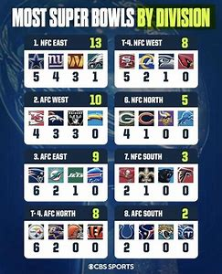

The division of a team is very important for their chances of making the Super Bowl. Better divisions make it much harder to reach the playoffs, while weaker divisions give teams a better chance to win more games within their division. Teams in the same division play each other twice per regular season, so they know each other’s plays and style well. These tougher games help teams prepare for the playoffs, but too many divisional losses could keep them out of the playoffs all together.
